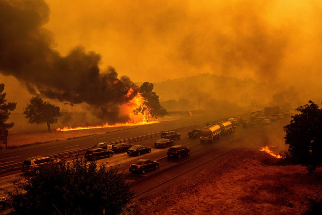
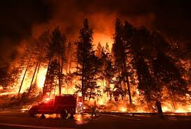
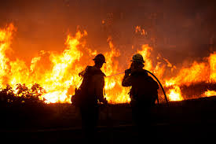

10 Days Before the Glass Fire
What are we doing here? When the air is red and the street lights are on at noon, we ask this question. When there are twenty-three major fires burning at once throughout California, and seventeen thousand firefighters battling them, we ask this question. When a firefighter dies in a blaze begun during a gender-reveal party, we ask this question. We ponder these questions on a smoke-tinged Friday, and on Saturday the sky is clear and we’re at the beach again. This is life in 2020 California.
Even then, there is a difference between living in the Bay Area and living in the tinderbox that the wine country has become. Every mile north of the Golden Gate, it gets hotter and drier and more susceptible to any spark. In San Francisco, we deal with the smoke of the northern fires, but none of the terror. The terror is lived by the residents of Paradise, and Journey’s End, and Santa Rosa, and Spanish Flat. And every time another fire comes, I think of my friends who live up that way.
KC Garrett and I grew up in the Chicago suburbs in the nineteen-eighties; we’ve known each other for thirty-seven years. She moved to California, in 1992, and became a teacher in San Francisco. Ten years later, she got her real-estate license and began selling homes in Napa and Sonoma. She married Tom Garrett, who had grown up in Santa Rosa, spending much of his childhood on his family’s vineyard, in Oakville. He’s now a winemaker who buys grapes from a number of vineyards, making his own wine under the Detert and Dakota Shy winery labels.
On August 16th, an electrical storm hit California. In seventy-two hours, the state was struck by lightning eleven thousand times. The storm brought no rain but sparked hundreds of fires—many of them eventually merging to form the L.N.U. Lightning Complex. Part of the complex, the Hennessey Fire, burned thousands of acres just a few miles northeast of the Garretts’ home. I visited Tom and KC in St. Helena in September, once that fire had been largely contained.
Tom poured some wine.
“It’s been challenging,” he said evenly. Tom, the most even-tempered person I know, is six feet five, with ginger hair, intellectual eyeglasses, and an unwavering earnestness about his work. “You should have seen me last week,” he said.
When smoke overtook the region, he made the decision to harvest many of his grapes early, given the possibility of smoke taint. Then he had to get them tested. Hundreds of wineries needed smoke-taint tests at the same time, and only a handful of labs could do it.
“The joke was that it was sort of like getting your covid test,” he said, “because the lab was still backed up. You could go in for your test and you wouldn’t find out the results until you’d already harvested the grapes and made wine.”
In the meantime, one of his main buyers, Mondavi—which has been owned by Constellation Brands since 2004—tested his grapes themselves, and determined that they had an unacceptable amount of taint. After days of calls and negotiations, Tom managed to sell his harvest to an array of smaller buyers, but lost a significant amount of money in the process.
But it could have been far worse. His vines had not burned, and his home was safe. With their three sons, ages seventeen, thirteen, and ten, Tom and KC live on Vineyard Avenue, a neighborhood dense with cottages and ranch houses, oaks and elms and olive trees. It looks a lot like it probably did in the nineteen-fifties. The kids ride their bikes to and from school, and the neighbors know one another. Because the vegetation is lush and well-watered, KC and Tom, and everyone in valley-floor areas like this, feel somewhat inured to the fires. The town of St. Helena proper had only once been evacuated in all the years the Garretts had lived there, and KC was not yet worried about the real-estate market.
“So far, it’s been gangbusters,” she said. covid-19, in fact, had spurred demand all over the wine country. People were leaving cities, especially San Francisco, and buying primary or secondary homes. “We can’t keep up with the demand,” she said.
The fires of 2020 had already burned 3.2 million acres throughout California. The smoke had covered the Bay Area for weeks—white, then yellow, like teargas, then crimson, then a sickly pink. As always, there was speculation that people would move out of the region, especially Napa and Sonoma, which had endured four years of debilitating, dispiriting fires. But there were degrees of risk, KC noted.
“You might see price reductions up in the hills,” she said. Throughout Napa and Sonoma, there were a number of homes at high elevations or in remote valleys, difficult to access and hard to defend. But the homes in town were considered safe bets. Most of her buyers were from California, so, she said, “they know the risks.”
She only knew of one family moving out. “A client of mine called yesterday and said, ‘I’m out.’ She lives in Pope Valley.” Pope Valley had been hit hard by the Hennessey Fire. “Other than that, most of the activity is coming in, not leaving.”
5 Days Before the Glass Fire
Mike Carlson, a volunteer firefighter, is the in-house attorney and vice-president for the Caymus Winery, based in Rutherford, a few miles south of St. Helena. He and the Garretts have known one another for years. When the Hennessey Fire started, Carlson drove one of the first engines to confront it, and then he and a crew of two spent nine days fighting it in Chiles Valley and Pope Valley. When that fire was under control, Carlson had a week off before he was sent out on a strike team to fight the Slater Fire, in southern Oregon. He was there for ten days.
When we met, amid the slatted shade and bubbling fountains of the Caymus Winery, Mike was dressed in khakis and a black button-down. He is a burly man of fifty, married for twenty-four years to his wife, Heather, with two kids, seventeen and nineteen. At forty, missing the camaraderie that he’d had as a college athlete, Carlson joined a volunteer department in Marin County and then, in 2016, the Napa County Fire Department. There are about twenty-eight thousand firefighters in California, and a third of them, mostly in rural areas, are volunteers. These days, though, limning the difference between a full-time firefighter and a volunteer is difficult. Carlson has spent fifteen of the last thirty-two days fighting fires. I asked him how often he’s on call.
He pulled out his pager and placed it on top of his smartphone. “24/7,” he said. He showed me an app that lists all the incoming calls for local firefighters, from car accidents to kitchen fires. “They’re very understanding here at the winery,” he said.
When we met, it felt a bit like meeting a soldier on R. and R., before he gets sent back to the front. There’s been little to no rain since the fires broke out, in August, and October brings the dry and wild Diablo winds. And this is a La Niña year, which means even drier conditions than normal.
“Remember those October rains that we used to get?” Carlson asked. “When my kids were kids, it would always be around Halloween we’d get that rain. We’re not getting that rain now.”
The Day of the Glass Fire
9:01 a.m.
It’s Sunday. KC texts to tell me that another fire started that morning. I call her. “It’s about a mile away,” she says. “You should come up.”
10:39 a.m.
On the drive north from San Francisco, the radio is full of snippets about the fire. It started at 3:48 a.m., in Deer Park, a small neighborhood just east of St. Helena. With just over a thousand residents, it sits on the eastern slope of a six-hundred-and-ten-foot rise called Glass Mountain. This morning, Cal Fire, the state’s fire-protection agency, calculates the scope of the fire at eight hundred acres.
The fire is close to dozens of wineries and the Meadowood resort, which houses a three-star Michelin restaurant. Residents of Deer Park have been ordered to evacuate, and the fifty-five patients at St. Helena Hospital have been transferred, by ambulance and car and bus, to facilities elsewhere.
11:02 a.m.
KC calls as I’m driving. A few years ago, she’d sold to the Brasswood winery—a small home, a barn, a guesthouse, and sixty-two acres of vineyards. Marcus Marquez had been her contact for the transaction. He’d just called to say all the buildings had burned to the ground that morning, everything but some vines.
“Mike Carlson’s up there, too,” she tells me. He’d been called in just after 4 a.m.
I drive north on Route 101. The traffic is heavy for a Sunday morning. There are campers, cars pulling fishing boats, pickup trucks loaded with bikes and kayaks. The fires have become normalized to a degree that life goes on all around them.
The skies this Sunday are blue until Petaluma. Then the highway passes under a stripe of dirty, acrid air. But, a few miles later, the sky is blue again. The plume of smoke is an almost orderly stripe, two miles wide and about ten miles long, blowing southeast from the fire in St. Helena. It reinforces the impression, this morning, that this new fire is circumscribed, contained or containable.
11:21 a.m.
I cut east on Highway 12 and then north on Calistoga Road. The two-lane road winds through dry hill country, following Deadhorse Creek, dense trees and underbrush all around. The homes stand on the downward slope, between the road and the creek below, and are generally unwelcoming. “Keep Out.” “Beware of Dogs.” “No Trespassing.” Near Gates Road, I pass two enormous piles of freshly cut wood on the side of the road.
Driving through this densely wooded land parched by drought, it’s impossible not to think about it burning. In California, everywhere we go, we look for risk. Underbrush, dead trees, dry leaves on roofs and in gutters. That could burn, we find ourselves saying. All that could burn.
11:34 a.m.
Calistoga is an amiable town of five thousand or so, and today it’s as lively as any Sunday during the pandemic. The smoke from the fire, only two miles south, is travelling southwest, so here in Calistoga the skies are blue and the town is bustling. People sit and eat outdoors at outdoor cafés. It’s hard to say how people in other parts of the country or the world would react to a fire so close and now burning a thousand acres, but Californians are calm. Maybe we’re hardened, or shell-shocked. Maybe we have such deep faith in our firefighters that we don’t panic until they tell us to. Meanwhile, though, we pay close attention to which way the winds are blowing. Right now, from Calistoga, the winds are blowing the other way, so brunch is served.
11:38 a.m.
I drive south of Calistoga on Route 29, and in minutes the fire becomes visible. It looks like an active volcano. An enormous plume of gray-white smoke billows from Glass Mountain’s wooded peak. I pull onto the gravel shoulder. The fire is across the road and beyond the valley floor, less than a mile from the road. All along the road, people have pulled over and are watching the fire like they’d watch a nasa launch.
I call KC. I’m two miles north of her house, and the smoke is blowing her way. She’s at home, her neighborhood is socked in with white smoke overhead, but otherwise she’s unworried.
“I just heard from a friend,” she says. “She woke up at three-thirty this morning and she felt a strange hot wind. So she got up, but figured it was nothing and went back to bed. Half an hour later, she woke up again. She looked out her window and the sun was coming up already. She looked at the clock and it said four. She woke up her husband and called 911. It was a big orange ball of fire coming over the hillside.”
This is a familiar story. The fire always comes from behind a hill or treeline. Always it resembles a sunrise.
11:56 a.m.
I park near the Sterling winery just as a black helicopter swoops down. Extending a hundred feet below, hung from a wire, is what looks like a red balloon. The helicopter drops the red balloon lower and lower, until it disappears into the vineyard. Then, seconds later, the red balloon reappears, dripping water as the helicopter rises. There is an irrigation ditch in the winery—not visible from the road—and from it the helicopter has just filled its bucket. The bucket seems enormous from where I’m watching, holding thousands of gallons, but, as the helicopter rises and flies toward the fire, the helicopter gets smaller and smaller—impossibly small—until it’s no bigger than a dragonfly, its bucket like a tiny red thimble. When it drops its water on the fire, a brief white spray quickly disappears, like sugar sprinkled from a teaspoon.
Every few minutes, one of five helicopters comes to the ditch. There are fixed-wing scouting and firefighting planes in the sky, too, at least ten of them, including the locally beloved vlat—Very Large Air Tanker. And, every ten minutes, the same black helicopter that started the cycle comes back to the irrigation ditch, fills its thimble-basket, and heads back to the volcano.
12:48 p.m.
In downtown St. Helena, all is calm. Tourists window-shop among the galleries and home-furnishing shops on Main Street, and the lunch crowd is dense outside a small restaurant called Himalayan Sherpa Kitchen.
At KC and Tom’s house, a few blocks away, we sit in their back yard, under the dappled shade of their hundred-year-old sycamore. They bring out their new puppy, which looks like a tiny caramel-colored stuffed animal with black-button eyes. I ask Tom if this new fire changes his plans for the rest of his harvest.
“That’s a very fair question,” he says. He has three vineyards that haven’t been picked yet, but they’re either farther north or farther south. “At this point, I don’t know if it’s a state of shock or just disbelief. Right now, I’m just”—he closes his eyes—”being here.”
Their middle son, Charlie, who’s thirteen and tall for his age, shows me a scooter that he’s modified. He’s removed its wheels and duct-taped the bottom, so he can ride it on their trampoline. He gets inside the enclosed trampoline and shows me a backflip.
“People are saying St. Helena is on fire again,” KC says. “And I say, ‘No. The northeast hills are.’ ”
The distinction is always important. Every time there’s a fire, Californians get worried texts from elsewhere in the country and world. Oh, that’s an hour east, we say. We’re fine here, though yesterday the air was pink. Generally speaking, the fires are always somewhere else. When they get closer, the warnings are usually incremental. Red Flag Day is first. Then Evacuation Warning. Then Mandatory Evacuation.
“As long as they can keep it from jumping Silverado Trail,” Tom says, referring to a road which acts as a key line of defense to the east.
KC opens an app on her phone, showing the movement of the fire. “It’s there,” she says, pointing to Deer Park. “They’re evacuating farther north, so I think it’s going north.”
Through the boughs of their oak we see a 747 firefighting plane, orange and white, flying south to refuel. There are so many sirens in the distance that they bleed together into a kind of delirious dial tone, while inexplicably the sky above us is now blue.
5:49 p.m.
I’m on Dunaweal Lane, on the north end of the Sterling winery, about eight miles north of KC and Tom’s house, watching the fire inch up the mountain. The wind is still blowing the fire southeast, and yet the fire is creeping upward, in the opposite direction. I remember something Mike Carlson had said when we met: “Fires want to go uphill.”
The flames are enormous now, bright-yellow blooms amid the pink-and-purple smoke. After a day of relentless firefighting on the ground and from the air, the fire is only growing. On the radio they say that it’s now two thousand acres, but from here it looks far bigger than that.
I text Carlson, checking to make sure that he’s O.K. I don’t expect him to answer.
A few minutes later I get a text. “It’s been hell,” he writes.
He sends a photo from high on the mountain, looking down into the inferno.
6:25 p.m.
Watching the fire from the north, it’s tempting to think that it’s under control. The planes are still swarming, and the fire’s progress, from here, seems slow. In a corkscrew of purple smoke there is a flickering light, no bigger than a pinhole. I realize that it’s the headlight of a helicopter—just a tiny white dot in a thousand-foot spire.
But, as the evening comes on, the flames pulse brighter in the dimming sky. A three-quarter moon is visible to the south, the pink smoke giving it the look of a copper penny. Then an arm of black smoke arrives from the direction of the fire, its long fingers reaching, grabbing, until the moon is gone.
Across the street from me, a couple sits in a blue pickup truck, watching the hills burn. A woman’s legs extend from the passenger-side window.
7:01 p.m.
I drive into town again and realize the view from the north has been a lie. Now all is chaos. The sky is black, the fire’s crossed Silverado Trail, and it’s threatening the valley floor. The flames are no more than a thousand feet from the road, but still there are cars everywhere on Route 29, pulled over, pulling over. Teen-agers are walking along the road, holding hands and taking pictures. A man parks his Tesla and gets out, wearing Dockers and a golf shirt. He films the flames for a few minutes and then drives off. Fire engines weave between the traffic, sirens on, honking manically. The scene is ludicrous.
The fire is far brighter, a neon orange in the suddenly black sky. When it burns hotter, the fire pulses, for a moment at least, into an otherworldly fuchsia. The skeletons of trees, whole forests, are clearly visible, backlit by orange. The fire is mostly silent from here, but occasionally there is a crackling sound when the trunk of a great pine breaks. This is followed by the thundering sound of the tree landing on the forest floor. I take a few pictures.
“Excuse me,” a voice says. It’s a man of about forty, who’s been standing, watching the fires near me. “If I gave you my card, would you send me some of those photos? I think that might be my winery burning.”
Justin Hunnicutt Stephens, his card says. I know his winery. It’s no more than two thousand feet from where we’re standing, and, whether or not it’s burning now, it’s directly in the line of fire.
7:32 p.m.
I’m standing in front of the AXR winery, just a bit north on Route 29. There are two young men filming the fires in front of me. The air is calm, and that’s good. A week ago, I met a firefighter named Bobby Payne who said that an ember can travel two miles, could land on a rooftop, in a gutter clogged with dry leaves, and ignite. High winds propelled the Tubbs Fire, which killed twenty-two people, in 2017. With no wind, fires burn slowly, creeping along, and firefighters can make progress on the land and from the air. With wind, though, the speed and unpredictability of a fire increase exponentially. Neighborhoods can ignite in minutes.
I’m talking into a tape recorder, and I say these words: “The one thing is that there’s not a lot of wind right now.”
Ten minutes later, I look up at a line of cypresses just across 29 and watch as their uppermost tips begin to sway.
7:44 p.m.
The AXR winery backs onto a heavily forested area on the west side of 29, and all day the thousands of people who have stopped to watch the fire have been doing so from the west, facing east. We have watched as we would a movie, facing one direction, never thinking that anything might happen behind us.
One of the young men who’s been filming turns. I follow his eyes and see, behind the treeline at our backs, a red sunrise. The fire is now on both sides of 29. And if it’s on the western side, it can quickly drop into St. Helena proper.
I text KC. I tell her that the fire jumped 29. She and Tom and the boys are in Santa Rosa, having dinner with Tom’s parents.
I drive to her neighborhood, where all is quiet at first. I go west on Madrona Avenue and look south, across a wide vineyard and into the wooded hills beyond. The red sunrise I’d seen from 29 is clearly visible now, about half a mile away. There’s a second fire, too. They’re no more than a few acres each, and about a quarter mile from each other. Neighbors have started to emerge, looking up at the hills glowing pink. A man stands in the street, wearing a robe and slippers and watching the fires with his hands at his sides. Another man is walking two giant poodles. On KC’s street, people are packing, throwing trash bags of clothes and belongings into the blue glow of their S.U.V. trunks.
The flash of a police car appears, then a dissonant siren sounds. “Please evacuate now,” the voice on the loudspeaker says. “This is a mandatory evacuation order. Please leave now.”
I call KC and tell her. “Oh, no,” she says. “O.K.” They’re heading home.
8:22 p.m.
In front of KC’s house, I stand on the roof of my car to get a better look into the hills. Now the first two fires have seeded a few smaller spots. Fountains of yellow fire shoot upward from a home site to the west. A bit east, a pulsing pink light is visible from behind a tree-lined ridge, like a candle flickering behind a black curtain.
A neighbor across the street seems skeptical about the evacuation. “Is it mandatory?” he asks. A woman pulls a wheeled suitcase to her car and hugs a neighbor. The lights of a police car take over the block and stop in front of the woman and her suitcase. I assume that he’s about to scold them for not leaving, but instead he says, “What’s up, Buttercup?” Old friends, they catch up while KC and Tom’s next-door neighbor Joe Galambos turns on his hose and begins to water his roof. The water slaps and hisses.
8:52 p.m.
KC and Tom arrive. Charlie jumps out and is soon on his scooter, crisscrossing the darkened street, sharing information with the remaining neighbors.
“Heading out?” Joe Galambos asks from his driveway.
“Yeah,” Charlie says, “Where are you guys going?”
“We’re going down Napa,” Galambos says. His car seems ready.
“O.K., bye,” Charlie says. He looks at his house. KC and Tom are inside, beginning to pack. “This is sad,” he says.
The Garretts will be turning around and going back to Tom’s parents’ place in Oakville. They have two cars. What to bring? The night is black and the air is acrid, and inside KC and Tom are both methodical and occasionally flummoxed. They know about evacuations, about having a “go bag,” but they’ve never had to evacuate before. And, because the fire is close but not yet bearing down on them, it presents a conundrum: spend an hour packing everything they can, or get the essentials and go?
They hustle in and out of the house, grabbing clothes and heirlooms. KC packs a cooler of drinks and food. Then KC and I face the wall of photo albums. They have so many—at least seventy. We fill the backseat of one of their cars. Another batch fills another seat. We face the wall again. There are still forty or so left.
“That’s fine,” she says. “That’s enough.”
But we have time, so I bring the rest to my car. Immediately after stacking them high in the backseat, the mountain crumbles, and programs and receipts from their wedding-planning days scatter on the car’s floor. Meanwhile, Charlie’s mood has changed. He’s chipper now, having realized that school will be cancelled tomorrow.
“Wanna see the view from Joe’s roof?” he asks.
Galambos is gone now—he was gone in minutes—and Charlie says that he usually lets him climb his roof. Charlie leads me to the back yard, where an aluminum ladder is set against the gutters. I follow him and feel the wet, sandpapery shingles. Tom joins us, and we see that the fire has grown again, doubled in size, the sky blooming rose-red. Tom and Charlie and I stare in silence for a minute. Now we see tiny lights in the black hills, engines making their way up to the fires. In the coming days, the Glass Fire will grow to sixty-five thousand acres—more than half of it seeded by these starts west of Route 29—before Cal Fire will get it under control. The Garretts’ house will be spared, and Mike Carlson will go home after three sleepless days in the flames.
It’s not right, any of this. The fact that it gets harder every year, that fires get more frequent, bigger, deadlier. The fact that we have to count on volunteers, and firefighters from Colorado, Texas, Mexico, Australia. The exorbitant expense. There aren’t enough people, there aren’t enough planes and bulldozers and trucks. There’s too much fire. We can’t keep living like this. More than anything, we can’t expect firefighters to live like this.
“O.K., Charlie,” Tom says. “Time to go.”